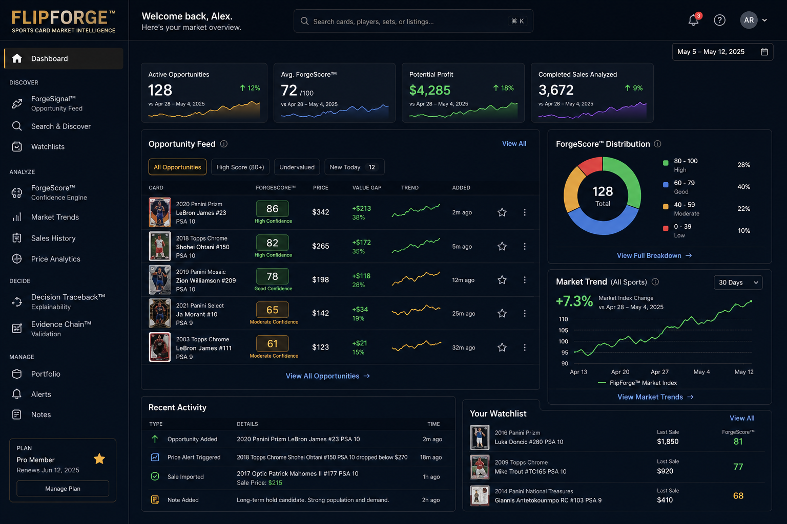

Signal. Confidence. Advantage.
FlipForge™, operated by FlipForge LLC, helps collectors, investors, dealers, and card flippers evaluate sports-card opportunities using listing discovery, completed-sale validation where authorized, standardized card identity, confidence scoring, and evidence-backed decision support.
The decision layer for serious card evaluation.
FlipForge™ is not a marketplace, buying bot, checkout tool, bidding tool, seller messaging tool, listing automation system, or raw data resale product. It is a market intelligence platform built to help users review opportunities before acting.
1. Noise
The sports-card market is crowded with inconsistent listings, incomplete descriptions, and unreliable pricing signals.
2. Discovery
ForgeSignal™ identifies active opportunity signals without treating asking prices as proven market value.
3. Validation
Evidence Chain™ compares active listing signals, available comps, evidence quality, and completed-sale evidence where authorized before confidence is assigned.
4. Advantage
ForgeScore™ and Decision Traceback™ help users understand the reasoning behind each decision.
Platform
FlipForge™ is designed for controlled limited-access production use, API validation, confidence scoring, evidence review, and decision support.
Market Intelligence
FlipForge™ reviews active listing signals, historical evidence where authorized, card identity, liquidity context, and risk indicators to help users evaluate whether a card deserves deeper attention.
Decision Support
The platform does not guarantee profit, predict future value, or provide financial advice. It gives users better evidence before they decide what to do.

Workflow
FlipForge™ follows a structured review process from discovery through validation.
Find
Discover candidate opportunities from active market signals.
Normalize
Standardize card identity using player, year, set, number, grade, and variation.
Validate
Compare evidence against active listing signals, available comps, completed-sale evidence where authorized, and market liquidity.
Explain
Decision Traceback™ shows why an opportunity was flagged, watched, blocked, or advanced for review.
Data Use
FlipForge™ uses marketplace data to support decision-making. Data is transformed into user-facing intelligence signals such as evidence quality, comp support, confidence score, liquidity signal, pricing context, and risk warnings.
Active Listing Discovery
FlipForge™ may review active marketplace listing signals to help users identify candidate opportunities. Active asking prices are treated as market signals, not proven market value.
Completed-Sale Validation
Where authorized marketplace access is available, FlipForge™ may use completed-sale evidence to validate whether active listing opportunities are supported by historical market outcomes.
Decision Support
Completed-sale evidence is used for validation, confidence scoring, liquidity review, and risk analysis. FlipForge™ does not sell raw completed-sale data as a standalone data feed.
Controlled Access
FlipForge™ is designed for controlled limited-access production use while FlipForge LLC validates platform behavior, API compliance, and data-quality standards.
Compliance
FlipForge LLC is building FlipForge™ with a focus on responsible data use, API compliance, user transparency, and clear separation from marketplaces, grading companies, card manufacturers, teams, leagues, and players.
FlipForge™ uses responsible marketplace data controls designed for review, validation, audit, and decision-support workflows.
- Rate limiting
- Duplicate request prevention
- Caching where permitted
- Endpoint-level API usage logging
- User/watchlist-level scan logging
- Error monitoring
- Controlled data retention
- Manual review fallback
FlipForge™ stores only the data needed for evidence review, scoring, audit, user decision support, product improvement, and compliance. Marketplace data is retained based on operational need and applicable marketplace requirements.
FlipForge™ does not automate purchases, bidding, checkout, seller messaging, or listing manipulation. The platform is built to support better review, not automated marketplace action.
FlipForge™ is an independent market intelligence platform. References to third-party brands, marketplaces, grading companies, manufacturers, leagues, teams, players, or card products are for identification, research, comparison, compatibility, and informational purposes only.
Request Access
FlipForge™ is currently available through controlled limited-access production review. Interested collectors, investors, dealers, and flippers may request access for platform review and feedback.